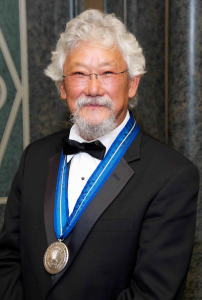

Canadian Academic, Science Broadcaster, and Environmental Activist

Timeline of Dr. David Suzuki:
1936 - was born with twin sister Marcia to Setsu Nakamura and Kaoru Suzuki in Vancouver, British Columbia
1942 - Suzuki and his family are interned with his mother and two sisters in a camp at Slocan, British Columbia; while his father is sent to a labour camp Solsqua, British Columbia
1958 - attained BA honours in Biology from Amherst College - Massachusetts
1961 - attained Ph. D in Zoology from the University of Chicago
1961-62 - held a research associateship in the Biology division at the Oak Ridge National Laboratory
1962-63 - was Assistant Professor in Genetics at the University of Alberta
1963 - Retired 2001 - became professor in the Genetics department the University of British Columbia
1971 - Suzuki begins his TV broadcasting career with the CBC while he continues University teaching and research in genetics
1976 - named Officer of the Order of Canada
1986 - receives UNESCO's Kalinga Prize
1989 - receives UNEP medal for bringing awarness to environmental issues through various TV and radio programmes
2006 - named Companion to the Order of Canada
2009 - receives Right Livelihood Award
"Governments and corporations are not just failing us, they are the driving forces that are taking us to the brink, wilfully ignoring the consequences and thereby committing what can only be called an intergenerational crime. The consequences of theiractions — and inaction — will reverberate for generations" - Dr. David Suzuki, Carbon Manifesto